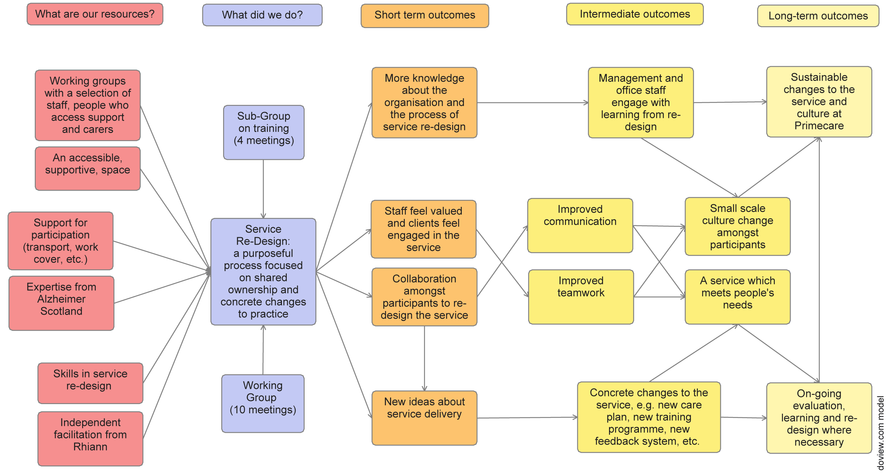

This is the story of a care at home provider that wanted to work differently. Primecare Health began their journey wanting to become specialised in helping people living with dementia to achieve their outcomes, but learned along the way that it wasn’t just about dementia. This case study explores how co-design can be used to support change and learning, and how care at home providers can make little changes for big impact.
We would like to take the opportunity to express our thanks to the participants in the project including the members of the co-design group and Alzheimer Scotland for their invaluable contributions.
The beginning
Primecare are a care at home provider who at the time of this project delivered care and support to people living at home across West Lothian, East Lothian and Edinburgh. Primecare works mostly with older people, but not exclusively. At the time of the project they had begun to notice that there had been a real shift towards supporting people with higher support needs across the area, and a particular shift towards many more of the people being supported by the provider living with dementia.
Primecare was experiencing some challenges in its way of working:
- Feeling caught in the ‘time and task’ commissioning trap, where staff were rushing to complete tasks and not focussing on outcomes and relationships
- Poor staff engagement which was evidenced in large numbers of staff not attending team meetings and mandatory training
- Issues with delivering a consistent service which they were trying to address through system/organisation management
- Many more people with high support needs being referred to the service which was putting a strain on the training team
- Increasing expectations of quality and expertise from clients, strategic partners and regulators with limited financial investment from the local authority commissioners
The project
We brought together a co-design group made up of frontline staff, management, trainers, people who received support from Primecare and their carers. In the early stages of the project, we specifically invited people who were living with dementia but we later revised this. Membership of the group was an ongoing challenge that we will discuss in more depth.
Managers of Primecare Health identified four key areas they wanted to redesign:
- The support and development of staff
- The design and delivery of outcomes-focussed support
- Marketing and using the opportunities presented by Self Directed Support
- Engaging and working together with people who use support and their families
We used a co-design approach to work on discussing, making and testing in an action research cycle, where ideas were tested between sessions and tweaked to work better. In the first meeting, the group discussed the four categories for change and set outcomes for each category and what they wanted to work on as a group - this loosely set the format for the 10 two-hour sessions that followed. However, when new ideas emerged or when the group struggled with making progress, we were able to be flexible and change the schedule to make time. For example, when the group struggled to think about supervision in the allocated session because they felt undervalued, we decided to give more time to the topic.
The key to the success of this project is that Primecare believed that the co-design group had the experience and expertise to make positive changes.
The vision
At the beginning of the project, we asked Primecare’s management to submit their vision for the future:
“Primecare Health want to be recognised as ‘specialised’ in delivering and supporting those with dementia and meeting their outcomes. Both myself, as Manager, and the Director are very committed to develop the company within this area and with the dedication of our ‘training and development officers’ we would welcome this opportunity to be part of this project. Dementia is an area which our team is very passionate about and we recognise the importance of how we need to redesign our approach especially with the commencement of Self Directed Support from April 2014. The amount of information regarding both these areas is somewhat overwhelming hence our enthusiasm to become involved in the ‘Fit for the Future’ project.
We would like our staff to be fully involved as much as possible, such as developing and enhancing their skills through more training, involving them in the development and redesigning of the care plan. In addition, enabling them to sharing their knowledge with their experience of caring for those with dementia.
Although we hold service user focus groups, we would like to have groups where service users, their carers and family can contribute and share their views and offer suggestions on how we can reshape our services. This would be in addition to redesigning our quality assurance visits with this involvement of service users and their carers/family.”
What did we hope to change?

Hold the phone ... Wasn’t this meant to be a dementia redesign? Early in the project, the group identified that a lot of the issues weren’t dementia specific, but more about improving the quality of care and support in general. Over time, the working group began to speak less about dementia and more about supporting people who needed different levels of support. However, the training sub-group continued to focus on specialist dementia training.
The real story
We’re going to share three mini case studies of some of the journeys we went on. We’ll go into depth about what made these examples successes or failures. In general, we found some specific approaches were really helpful in bringing a group together and we wanted to share these.
What worked?
- We spent time in the early sessions connecting as people and taking the time to acknowledge all the skills in the room. One of the ways we did this was by asking all participants to make their own name badges with three things they were great at on them. This exercise proved positive and the group members seemed to feel attached to their badges, choosing to wear them even after we knew each others names.
- Similarly, one of the breakthrough learning moments for the group around outcomes was when everyone brought in an item that represented what really mattered to them. The group was able to share really personal parts of their life and think about outcomes as more of a ‘person thing’ rather than a ‘service thing’.
- Each session had a clear focus, and there was reflection and work to do between the group meetings to make sure that people felt prepared.
- The sessions were regular but short and sweet. This was to accommodate the schedules of care staff as well as make the sessions convenient for people who used the support.
- Asking people to speak to different people within the group, and even sit in different spots at each session. In the early sessions we noticed a trend of staff sitting with each other, but once they were prompted they developed great relationships outside of the staff team.
- The groups were generally informal (we even held them in a pub!). We started and ended each session with a group chat and members all remarked that they felt able to be open and honest about their experiences.
What were the challenges?
Our main challenge was bringing together (and maintaining) a diverse co-design group
- Staff
We had difficulty with staff attendance because of the logistics of staff having to find cover for their shifts, especially over the summer. However, staff were flexible and creative about making the group a priority. - Managers
We noticed that we didn’t have representation from middle manager coordinators in the group. Their involvement might have helped to embed some of the ideas discussed within the group, as many of these coordinators are responsible for care planning. - People who access support and their families
We had ongoing issues with making sure people who accessed support could come along to the group. Some of the group members became unwell and were admitted to hospital during the course of the project and one member unfortunately died after the first two meetings. People who accessed support were often relying on staff to drive them to and from the sessions which meant that if staff were unable to attend, so were they. For some family members, the groups were simply too much of a time commitment given their caring commitments. Many family members chose to dip in and out of the group because they felt that it was interesting, but they weren’t able to commit to the full process.
We also struggled to find an appropriate venue
We tried two venues during the project and neither was ‘just right’. We found it really hard to find a central location that was accessible by wheelchair within our budget. At times, the setting was distracting. But it also contributed to how informal and open the meetings could be. In fact, one meeting was on a staff member’s birthday and day off and she had a celebratory gin and tonic whilst discussing the importance of word-of-mouth marketing!
Facilitation Challenges
Because of the diversity of the group, some of the activities just didn’t ‘click’ for some members. After the first two meetings, the group reflected that they much preferred to have a group conversation rather than do too much ‘workshoppy’ work. In response to this, the sessions each had a loose outcome but we were flexible about how we got there.
Brainwave! In the evaluation, a staff member suggested that if they were to undertake the process again staff could identify a person they work with who would be interested in the group, and could travel together. This would mean they could discuss the ideas outside of the group and could also regularly remind/schedule the sessions in.
Outcomes
Over time, relationships and understanding in the group grew and led to really useful joint working which was evidenced in a few key shifts:
- Members of the group openly valued each other’s inputs and were able to challenge each other as well, asking for specific examples or clarifying language.
- There was a shift in language, particularly between frontline staff and people who used support. Towards the final sessions, the group began using language that centred around relationships like “friendship”, “I really care about the people I work with, I do think about them after the shift’s over” and even describing relationships as “love”.
- Improved sense of wellbeing for staff and sense of inclusion for the people who used support.
- At the beginning of the meetings there was a resistance to trying new things on the grounds that “it would never work so there’s no point”. However, by the final five sessions there was a lot more enthusiasm for trying new ideas, and the group felt okay when they had tried an approach and it hadn’t worked because they were more confident in the process.
- After the meeting, Primecare noticed greater participation and involvement from care staff in particular, with them offering to support and help shape organisational development. The operations manager noted that staff wanted to shape the agenda for upcoming service user forums and help bring people along.
Outcomes for members of the group
People who used Primecare’s support felt happy to be involved, and liked that they had an opportunity to contribute:
“Liked hearing about the ins and outs of how Primecare works and how carers deal with things. Liked listening to other people’s suggestions and giving mine”
—Family member
“Mum thoroughly enjoyed the meetings that she attended. She said that it was nice to meet other folk from Primecare and other people who were clients and dependants. The meetings were held in a very professional manner. It was nice that they formed groups and discussed various topics, Mum especially enjoyed the day that her ‘group’ were asking about her, her young life, where she was brought up, what she likes/dislikes etc etc! There were times that she couldn’t hear what was being said in conversations and found this quite frustrating!”
—Family member speaking on behalf of person using the service
“Felt that it was good for ‘carers’ to hear about how their ‘clients’ feel also”
—Family member
Outcomes for staff
Primecare Health case studies
For more information about the Primecare redesign project, please read the three case studies:
- Feedback loop
How we redesigned feedback systems for people who use support. - Staff support and supervision
How we worked with staff to redesign supervision processes. - Training
How we explored staff training and development.